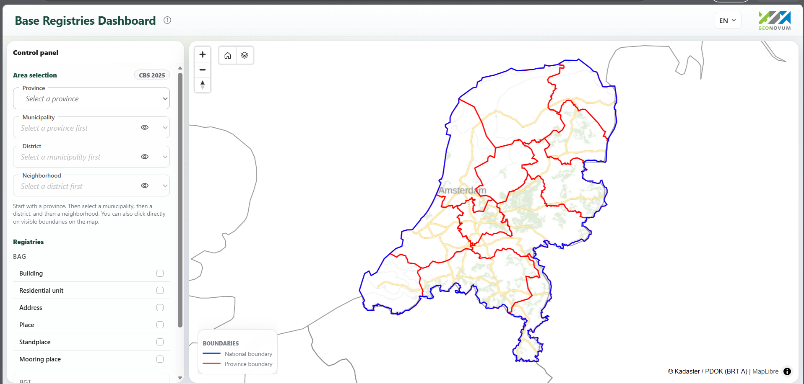

Geospatial Dashboard Viewer
This project was developed during my internship at Geonovum to explore how Dutch geospatial datasets can be made easier to access, understand, and use through an interactive WebGIS application.
The dashboard works with BAG and CBS data accessed through PDOK OGC APIs and includes functionality for exploring spatial information, drill-down analysis, and generating bilingual reports.
